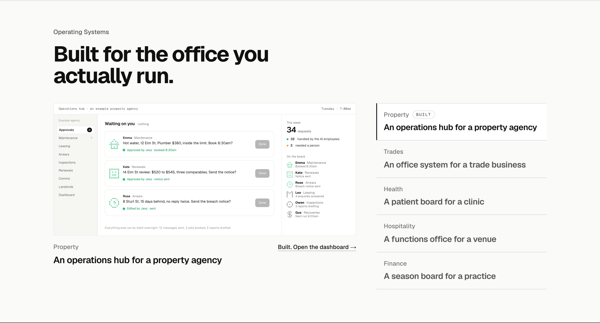
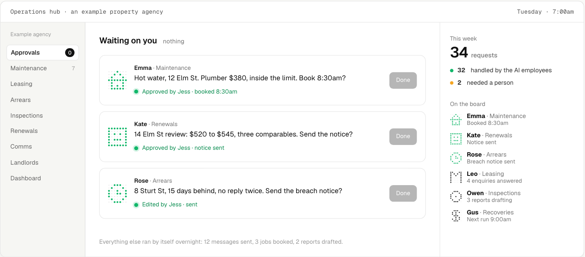
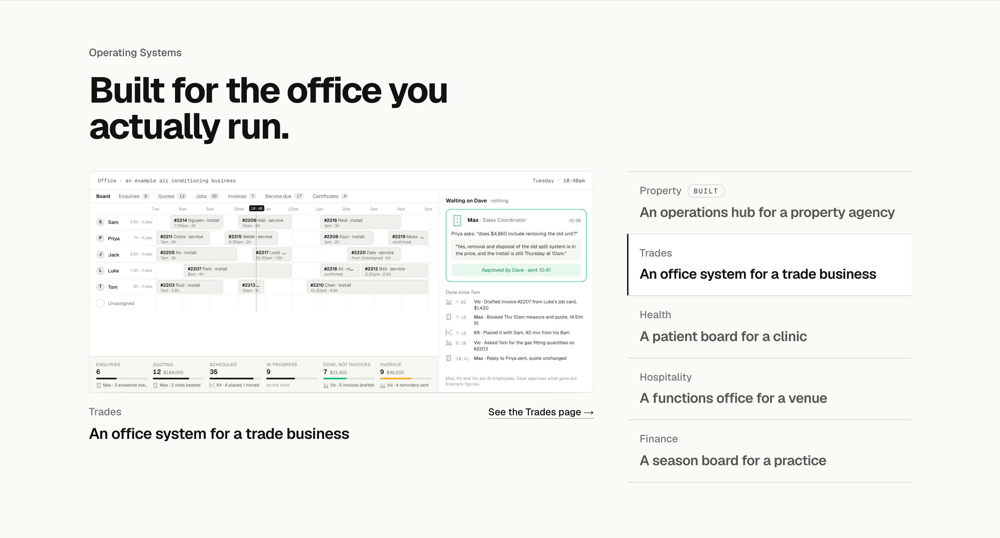
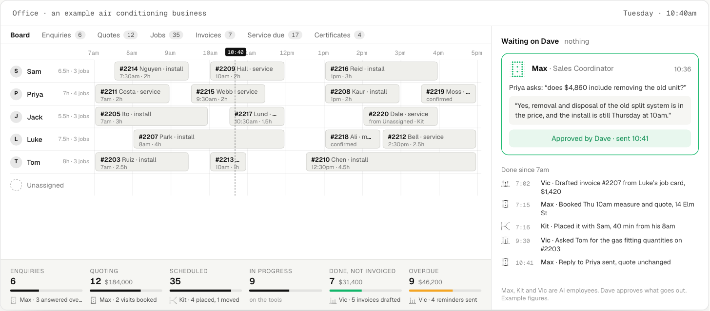
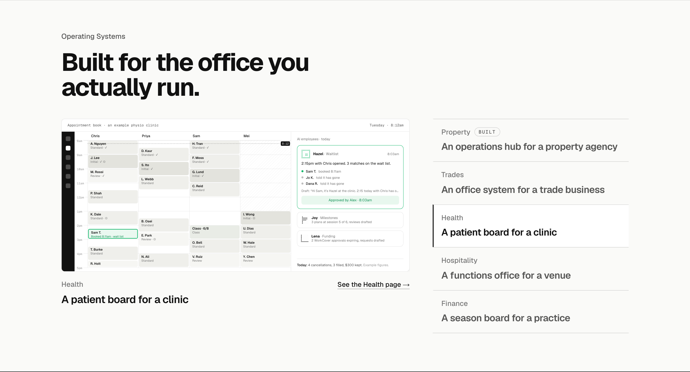
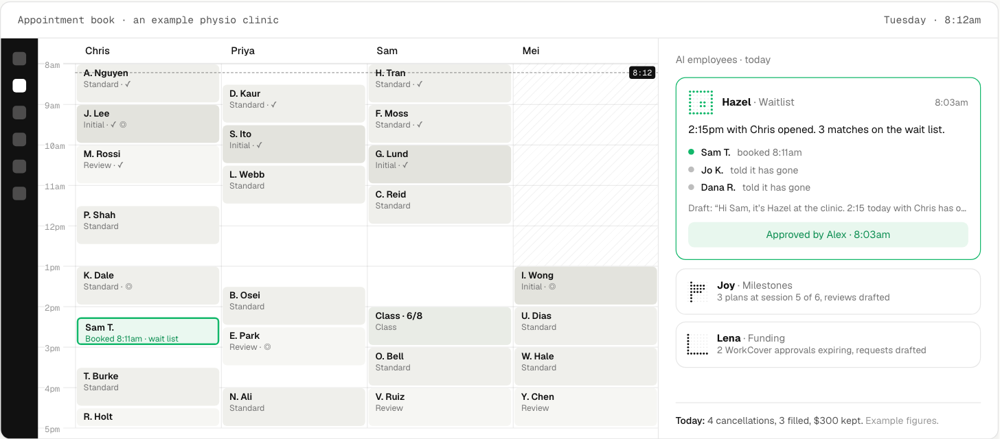
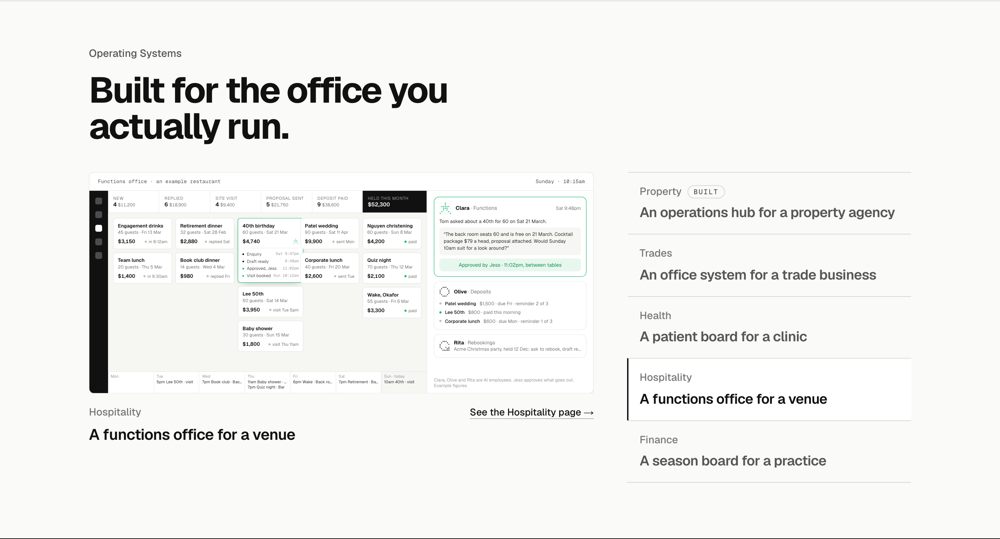
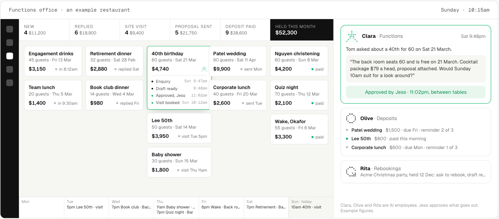
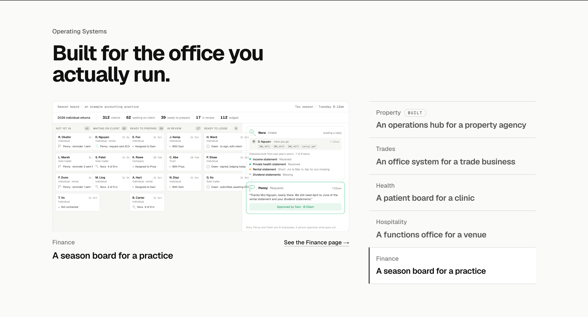
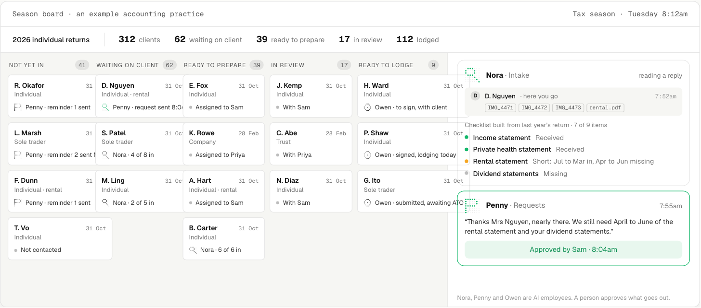

Operating Systems: one screen per industry
Your pick, option 1 (the hub whole), cleaned up, then the other four industries, each drawn in its own software’s idiom from the dashboards research. Each shown in place at 1440 with that industry active in the list, then the screen close up, in its finished state. All five play when they come into view at /lab/operating-systems. Every name, address and figure is made up.
Property, first draftOption 1 as drawn on the first board: the one you picked, before the clean-up.

Property, cleaned upYour pick, option 1, read cleaner: three regions (the modules down the side, the three decisions, the week and the team), one line per decision, nothing else. The research found every property system is a left rail of nouns, lists of jobs with who is on them, and one amber panel for the decision, which is what this is.


Trades, the dispatch boardWhat ServiceM8 and simPRO open to: technicians as rows, hours across, a now-line, grey job blocks. The two dashed blocks are the scheduler’s placements going solid, and the unassigned job slides into Jack’s 2pm. Under it the pipeline strip trade software keeps (Fergus), with each AI employee under its column; on the right the one reply waiting on the owner, then the morning’s feed.


Health, the appointment bookWhat every clinic system opens to: time down the side, practitioners across, blocks with a name, a time and glyphs, one column unavailable till 1pm. The cancelled 2:15pm is the only dashed block; the wait-list offers on the right are the one approval, and the slot fills as it plays.


Hospitality, the functions pipelineWhat functions software (Tripleseat, Perfect Venue) opens to: a sales view, not a calendar. Stages with counts and dollars across the top, cards by stage, the 40th moving from New to Site visit as it plays with its timeline on the card; Clara’s reply the one approval, deposits and rebookings under it, the week along the bottom.


Finance, the season boardWhat practice software shows (FYI, Karbon): a jobs board by stage with count pills and the fat “waiting on client” column, the AI employee as the last line of each card. On the right, one reply read against the checklist built from last year’s return, and one request approved; a finished file moves to Ready to prepare and the counters tick.

